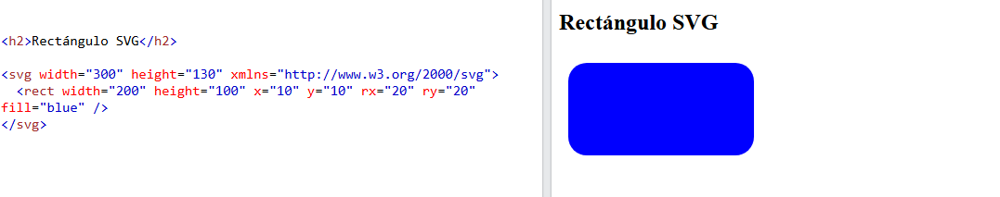
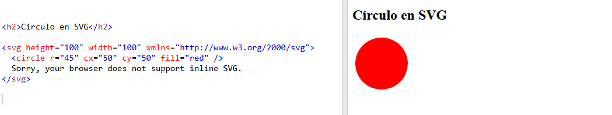
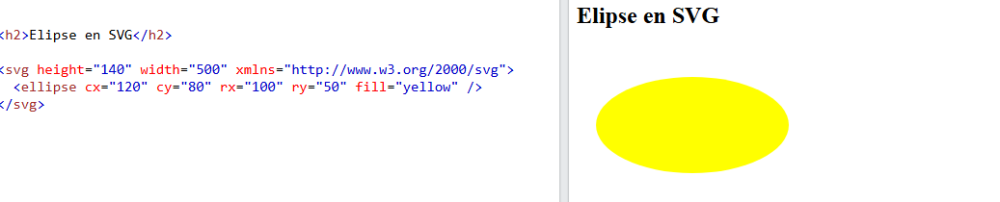
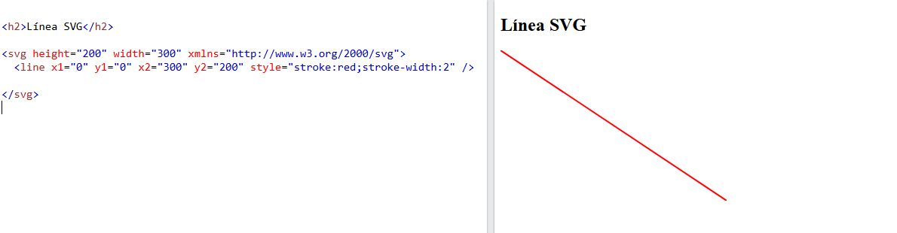
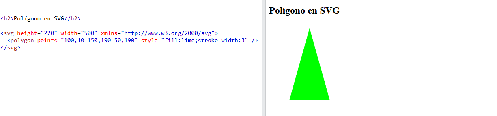

SVG comes from "Scalable Vector Graphics", and its used to define graphics with vectors in XML, with simple forms.
We can include SVG graphics directly into our HTML pages, using the <svg> tag and inside it we define some parameters
like height y width and the namespace with the attribute xmlns .
If you prefer Download a PDF version
Let's see some SVG tag examples:
The element <rect> is used to create a rectangles and variations from a rectangular shape. It has six basic attributes to give it shape and position, which are:
| Attribute | Description |
|---|---|
| Width | Required. The width of the rectangle. |
| Height | Required. The height of the rectangle. |
| X | The x-position for the top-left corner of the rectangle. |
| Y | The y-position for the top-left corner of the rectangle. |
| rx | The x radius of the corners of the rectangle (used to round the corners). Default is 0. |
| ry | The y radius of the corners of the rectangle (used to round the corners). Default is 0. |
Example of a rectangle filled with blue color (attribute fill ):
Learn more about this in the section Rectangles in SVG from w3schools.
The element <circle> is used to create a circle, and has three basic attributes:
| Attribute | Description |
|---|---|
| r | Required. The radius of the circle. |
| cx | The x-axis center of the circle. Default is 0. |
| cy | The y-axis center of the circle. Default is 0. |
Example of a red-filled circle (attribute fill ):
Learn more about this in the section Circles in SVG from w3schools.
Ellipses are closely related to circles; they are defined by <ellipse>. They have 4 basic attributes:
| Attribute | Description |
|---|---|
| rx | Required. The x radius of the ellipse. |
| ry | Required. The y radius of the ellipse. |
| cx | The x-axis center of the ellipse. Default is 0. |
| cy | The y-axis center of the ellipse. Default is 0. |
Example of a yellow-filled ellipse (attribute fill ):
Learn more about this in the section Ellipses in SVG from w3schools.
The <line> tag allows the user to create a line from the start point (x1, y1) to the point (x2, y2). It has 4 basic attributes:
| Attribute | Description |
|---|---|
| x1 | Required.The start of the line on the x-axis. |
| y1 | Required.The start of the line on the y-axis. |
| x2 | Required.The end of the line on the x-axis |
| y2 | Required.The end of the line on the y-axis. |
Also, we must define the line width and the line color with an attribute (style="stroke:color;stroke-width:desired width)
Example of a red line (attribute fill ):
Learn more about this in the section Lines in SVG from w3schools.
The <polygon> tag allows us to create a polygon, defining its points, which close automatically (the last point with the first). It only has one basic atribute, points, which lists the points that made the polygon. Each points needs to have a coordinate x and a coordinate y. We also need to define the line width and color with an attribute (style="stroke:color;stroke-width:desired width).
Let's see an example:
Learn more about this in the section Polygons in SVG from w3schools.